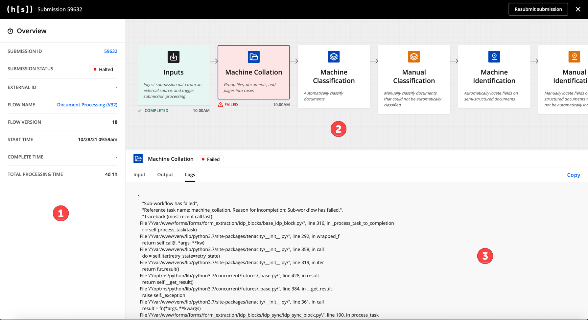

FAQ
This section includes answers to many common questions, such as best practices and the management of the Hyperscience Platform lifecycle.
The Examples section contains fully executable flows as well as code snippets to help you solve common problems.
Testing & Debugging
Testing and debugging is best done in the Hyperscience Platform by inspecting the input and output of each block in your flow. Any submission can be inspected by clicking into the submission page, then clicking Actions > View Flow Execution.

The Flow Execution page has the following sections:
Overview: The left-hand sidebar shows metadata for the submission.
Flow Run diagram: The upper-right panel shows a diagram of the flow. The processing status for an individual block is shown under the block, along with the time the block completed or failed processing (if applicable). If the block has no status underneath it, it has not processed the submission yet. Clicking on a block reveals its input, output, and logs in the Block Details panel below.
Block Details: The Block Details panel has three tabs:
Input: The Input tab shows the JSON that the block used for processing.
Output: Clicking on the Output tab shows the JSON that the block produced during processing (if applicable). Note that the Output JSON for the final block in a completed submission is not the same as the JSON output for the entire submission.
Logs: If the block failed to process the submission, the Logs tab shows error information for the block. You can copy any of the data shown in the Block Details panel by clicking Copy in the upper-right corner of the panel.
If you’re new to development on the Hyperscience Platform, we recommend going through the full Tutorial which includes a walkthrough of these tools.
Python Libraries
The following Python 3-compatible libraries are available for import:
All Python 3 standard libraries, ex.
datetime,re,mathrequestsrequests_oauthlibfuzzywuzzyorjsonlxmlnumpycv2
These libraries are meant to be executed within a Code Block. A full example of the datetime library being imported for use is seen in the IDP w/ Code Block example. Here is a snippet from that example:
# ...assume prior processing of documents creates a "submission" dict
# Function that imports datetime library for modifying the
def _mark_as_completed(submission: Any) -> Any:
from datetime import datetime
dt_completed = datetime.isoformat(datetime.utcnow())
dt_completed_fmt = dt_completed + 'Z'
for document in submission['documents']:
document['state'] = 'complete'
document['complete_time'] = dt_completed_fmt
for page in document['pages']:
page['state'] = 'complete'
for page in submission['unassigned_pages']:
page['state'] = 'complete'
submission['state'] = 'complete'
submission['complete_time'] = dt_completed_fmt
return submission
# Code Block executes the above function
custom_code = CodeBlock(
reference_name='mark_as_completed',
code=_mark_as_completed,
code_input={'submission': submission},
title='Mark As Completed',
description='Updated Transformed JSON to Completed State',
)
Code Blocks in Flow Studio
The Python script executed by a Code Block may be modified directly from the Flow Studio - full documentation is in our user guide here.
This is valuable for technical users wishing to make small changes, such as modifying data validation, data formatting, API parameters, etc. without needing to download, set up, and grok the entire flows_sdk development process.
Warning
If you wish to enable future users to download the Python file directly from a Code Block in Flow Studio, you MUST upload that file separately from the full JSON artifact.
We recommend building the entire flow in your IDE, testing and debugging in the Hyperscience Platform, and as a final step breaking out any Code Block functions into separate files and uploading them within Flow Studio.